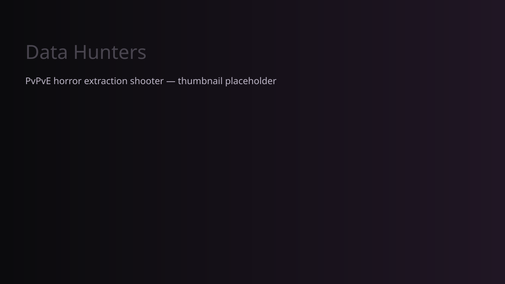
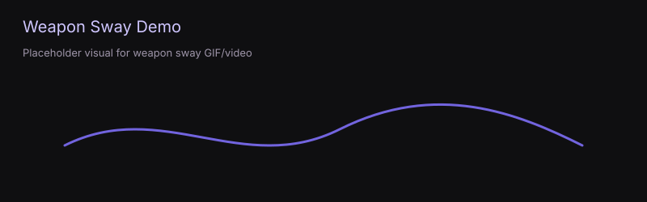
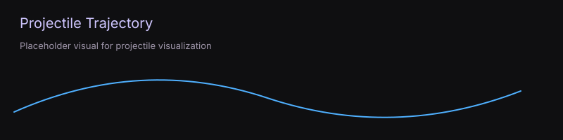

PvPvE horror extraction shooter
Data Hunters is a PvPvE horror extraction shooter built around high-risk gameplay and server-authoritative FPS systems. Players collect data cores, fight AI and other players, and extract with rewards that feed into persistent progression.
Data Hunters is inspired by extraction shooters such as Hunt: Showdown for its extraction loop, and Escape from Tarkov for its mechanical depth. I built this project because Roblox lacks a mature extraction shooter subgenre and few PvPvE horror games with realistic gunplay.

On launch players enter the lobby, edit loadouts, and queue for matchmaking. Once a match fills, players are teleported into the map and a 15 minute timer begins. Players may extract with data cores to secure rewards.
The most technically difficult system I built is the dynamic weapon sway. It simulates spring-based physics driven by camera velocity and composes multiple spring simulations to produce positional and rotational viewmodel offsets instead of relying on canned animations.

local SpringData = require(script.Parent.SpringData)
local SpringState = {}
function SpringState.initState()
return {
target = 0,
position = 0,
velocity = 0
}
end
function SpringState.impulseSpring(config, state, input)
input = input or 1
state.velocity += input * config.fixedImpulse
end
function SpringState.updateSpring(config, state, dt)
local displacement = state.position - state.target
local acceleration =
-config.tension * displacement
-config.density * state.velocity
state.velocity += acceleration * dt
state.position += state.velocity * dt
end
return SpringState
local function visualFire(tool, input)
playSoundGroup(tool, tool.model.Dynamic.FirePart.Sounds:GetChildren())
playEffectsGroup(tool, tool.model.Dynamic.FirePart.MuzzleFlash:GetChildren())
SpringState.impulseSpring(tool.config.springConfigs["pBlowX"], tool.springs.pBlowX, input / 5)
SpringState.impulseSpring(tool.config.springConfigs["pBlowY"], tool.springs.pBlowY)
SpringState.impulseSpring(tool.config.springConfigs["pBlowZ"], tool.springs.pBlowZ)
SpringState.impulseSpring(tool.config.springConfigs["rBlowX"], tool.springs.rBlowX, input)
SpringState.impulseSpring(tool.config.springConfigs["rBlowY"], tool.springs.rBlowY)
SpringState.impulseSpring(tool.config.springConfigs["rBlowZ"], tool.springs.rBlowZ)
end

Projectiles are simulated by calculating next positions and raycasting between the current and goal position to detect collisions and penetration. Penetrable materials (glass, thin wood) recursively allow continued simulation.
function Projectile:NextPosition(dt)
self.yVelocity += GRAVITY * dt
self.airTime += dt
local newPosition = (self.projectileObj.Position + self.direction * (self.xVelocity * dt)) + Vector3.new(0, self.yVelocity * dt, 0)
--newPosition += Vector3.new(0, self.y, 0)
return newPosition
end
Frame-independence was initially missed, causing different sway magnitudes across clients. I first attempted a 60FPS cap hack but ultimately fixed it by multiplying motion by delta-time and using fixed-time updates where appropriate.
Each gun has a config dictionary with stats, spring configs, animation IDs, viewmodel offsets, and a prefab reference. Runtime state is tracked server-side and frozen when unequipped. The `guntool` module manages local updates, input handling, and spring initialization; a `toolcontroller` abstraction supports generic tools. Projectiles use separate controller and config modules for physical properties.
You provided these modules — full files are available for download and are embedded below:
spring.lualocal SpringData = require(script.Parent.SpringData)
local SpringState = {}
function SpringState.initState()
return {
target = 0,
position = 0,
velocity = 0
}
end
function SpringState.impulseSpring(config, state, input)
input = input or 1
state.velocity += input * config.fixedImpulse
end
function SpringState.updateSpring(config, state, dt)
local displacement = state.position - state.target
local acceleration =
-config.tension * displacement
-config.density * state.velocity
state.velocity += acceleration * dt
state.position += state.velocity * dt
end
return SpringState
guntool.lualocal RepStore = game:GetService("ReplicatedStorage")
local SpringState = require(RepStore.Modules.Spring.SpringState)
local GunState = require(script.Parent.GunState)
local ProjController = require(RepStore.Modules.Projectile.ProjectileController)
local plr = game.Players.LocalPlayer
local Gun = {}
-- reload stages:
-- 0 = idle (not reloading)
-- 1 = reloadStart
-- 2 = reloadBody (loops back to itself if continuous and not full / reserve remains)
-- 3 = reloadEnd
-- 4 = manualBoltOpen (only entered if chamber was empty when reload started)
-- 5 = manualBoltClose (only entered if chamber was empty when reload started)
-- bolt-cycle phases (post-fire automatic cycling):
-- 0 = idle
-- 1 = boltOpen
-- 2 = boltClose
local function impulseAimSprings(tool, input)
tool.springs.pAimX.target = -input.X
tool.springs.pAimY.target = input.Y
tool.springs.pAimZ.target = -input.Z
end
local function playSoundGroup(tool, sounds)
for _, sound in ipairs(sounds) do
sound:Play()
end
end
local function playEffectsGroup(tool, effects)
for _, effect in ipairs(effects) do
effect:Emit(10)
end
end
local function visualFire(tool, input)
playSoundGroup(tool, tool.model.Dynamic.FirePart.Sounds:GetChildren())
playEffectsGroup(tool, tool.model.Dynamic.FirePart.MuzzleFlash:GetChildren())
SpringState.impulseSpring(tool.config.springConfigs["pBlowX"], tool.springs.pBlowX, input / 5)
SpringState.impulseSpring(tool.config.springConfigs["pBlowY"], tool.springs.pBlowY)
SpringState.impulseSpring(tool.config.springConfigs["pBlowZ"], tool.springs.pBlowZ)
SpringState.impulseSpring(tool.config.springConfigs["rBlowX"], tool.springs.rBlowX, input)
SpringState.impulseSpring(tool.config.springConfigs["rBlowY"], tool.springs.rBlowY)
SpringState.impulseSpring(tool.config.springConfigs["rBlowZ"], tool.springs.rBlowZ)
end
local function getRecoilImpulse()
return math.sin(tick() * 1.0) * 0.5 +
math.cos(tick() * 5.4) * 0.4 +
math.sin(tick() * 8.7) * 0.3
end
-- helper to play an animation track if it exists
local function playAnim(tool, name)
local track = tool.animTracks[name]
if track then
track:Play()
end
return track
end
local function stopAnim(tool, name)
local track = tool.animTracks[name]
if track then
track:Stop()
end
end
-- maps reload stage -> animation name, used to stop whichever stage we're leaving
local RELOAD_STAGE_ANIM = {
[1] = "reloadStart",
[2] = "reloadBody",
[3] = "reloadEnd",
[4] = "manualBoltOpen",
[5] = "manualBoltClose",
}
-- maps bolt phase -> animation name, used to stop whichever phase we're leaving
local BOLT_PHASE_ANIM = {
[1] = "boltOpen",
[2] = "boltClose",
}
local function fire(tool)
-- cannot fire while bolt is cycling
if tool.boltPhase ~= 0 then
return false
end
-- cannot fire while empty chamber
if not tool.state.chamberLoaded then
print("-click-")
return false
end
tool.state.chamberLoaded = false
ProjController.spawn(tool, tool.config.projectile)
-- kick off automatic bolt cycle: boltOpen -> boltClose -> chambered
tool.boltPhase = 1
local track = playAnim(tool, "boltOpen")
tool.boltTimer = track and track.Length or (tool.config.fireRate or 0.2) / 2
return true
end
local function startBoltClose(tool)
stopAnim(tool, BOLT_PHASE_ANIM[tool.boltPhase])
tool.boltPhase = 2
local track = playAnim(tool, "boltClose")
tool.boltTimer = track and track.Length or (tool.config.fireRate or 0.2) / 2
end
local function finishBoltCycle(tool)
stopAnim(tool, BOLT_PHASE_ANIM[tool.boltPhase])
tool.boltPhase = 0
tool.boltTimer = 0
if tool.state.ammo > 0 then
tool.state.ammo -= 1
tool.state.chamberLoaded = true
print("chamber loaded")
end
-- bolt cycle finished and nothing else is going on, resume idle
if tool.reloadStage == 0 then
playAnim(tool, "hold")
end
end
function Gun.attach(instance, config, viewModel)
local tool = {}
tool.state = instance
tool.config = config
tool.viewModel = viewModel
-- spawn weapon model
local model = config.prefab:Clone()
model.Parent = viewModel.model
tool.model = model
-- attach to socket
local socket = viewModel.model.RightArm
if socket and model.PrimaryPart then
model:PivotTo(socket.CFrame)
local joint = Instance.new("Motor6D")
joint.Name = "Base"
joint.Part0 = socket
joint.Part1 = model.PrimaryPart
joint.Parent = socket
end
tool.boltPhase = 0
tool.boltTimer = 0
tool.reloadTimer = 0
tool.reloadStage = 0 -- see stage comments at top of file
tool.reloadFromEmpty = false -- whether this reload needs manual bolt open/close
tool.burstRemaining = 0
tool.burstTimer = 0
tool.aimRotation = CFrame.identity
tool.springs = {
camRecoilY = SpringState.initState(config.springConfigs["camRecoilY"]),
camRecoilZ = SpringState.initState(config.springConfigs["camRecoilZ"]),
camRecoilX = SpringState.initState(config.springConfigs["camRecoilX"]),
pAimX = SpringState.initState(config.springConfigs["pAimX"]),
pAimY = SpringState.initState(config.springConfigs["pAimY"]),
pAimZ = SpringState.initState(config.springConfigs["pAimZ"]),
rAimX = SpringState.initState(config.springConfigs["rAimX"]),
rAimY = SpringState.initState(config.springConfigs["rAimY"]),
rAimZ = SpringState.initState(config.springConfigs["rAimZ"]),
pBlowX = SpringState.initState(config.springConfigs["pBlowX"]),
pBlowY = SpringState.initState(config.springConfigs["pBlowY"]),
pBlowZ = SpringState.initState(config.springConfigs["pBlowZ"]),
rBlowX = SpringState.initState(config.springConfigs["rBlowX"]),
rBlowY = SpringState.initState(config.springConfigs["rBlowY"]),
rBlowZ = SpringState.initState(config.springConfigs["rBlowZ"]),
}
-- build an AnimationTrack for every animation listed in config, keyed by name
tool.animTracks = {}
for animName, animID in config.animations do
local animInstance = Instance.new("Animation")
animInstance.AnimationId = animID
tool.animTracks[animName] = viewModel.model.AnimationController.Animator:LoadAnimation(animInstance)
end
if tool.animTracks.hold then
tool.animTracks.hold.Looped = true
tool.animTracks.hold:Play()
end
return tool
end
local function enterReloadStage(tool, stage)
local previousStage = tool.reloadStage
-- stop whatever was playing before this stage: either a prior reload-stage
-- animation, or the idle hold if we're entering reload fresh from stage 0
if previousStage == 0 then
stopAnim(tool, "hold")
else
stopAnim(tool, RELOAD_STAGE_ANIM[previousStage])
end
tool.reloadStage = stage
if stage == 1 then
local track = playAnim(tool, "reloadStart")
tool.reloadTimer = track and track.Length or 0.5
print("starting reload")
elseif stage == 2 then
local track = playAnim(tool, "reloadBody")
tool.reloadTimer = track and track.Length or 0.8
print("reloading...")
elseif stage == 3 then
local track = playAnim(tool, "reloadEnd")
tool.reloadTimer = track and track.Length or 0.5
print("ending reload")
elseif stage == 4 then
local track = playAnim(tool, "manualBoltOpen")
tool.reloadTimer = track and track.Length or 0.5
print("manually opening bolt")
elseif stage == 5 then
local track = playAnim(tool, "manualBoltClose")
tool.reloadTimer = track and track.Length or 0.5
print("manually closing bolt")
end
end
function Gun.update(tool, viewModel, input, dt)
-- spring impulses
if input.secondary.clicked then
local aimOffset = tool.model.Dynamic.AimPart.CFrame:ToObjectSpace(
viewModel.model.PrimaryPart.CFrame * tool.config.vmOffset:Inverse()
)
impulseAimSprings(tool, aimOffset)
else
impulseAimSprings(tool, CFrame.new(0, 0, 0))
tool.aimRotation = CFrame.identity
end
-- update springs
for name, state in tool.springs do
SpringState.updateSpring(tool.config.springConfigs[name], state, dt)
end
-- automatic bolt-cycle ticking (post-fire eject/chamber)
if tool.boltPhase ~= 0 then
tool.boltTimer -= dt
if tool.boltTimer <= 0 then
if tool.boltPhase == 1 then
startBoltClose(tool)
elseif tool.boltPhase == 2 then
finishBoltCycle(tool)
end
end
end
-- reload handling
if tool.reloadStage ~= 0 then
-- interruption check
if tool.config.reloadBehavior.canInterrupt then
if input.primary.justPressed and tool.reloadStage ~= 3 and tool.reloadStage ~= 4 and tool.reloadStage ~= 5 then
enterReloadStage(tool, 3)
end
end
if tool.reloadStage ~= 0 then -- reload has not finished
tool.reloadTimer -= dt
if tool.reloadTimer <= 0 then
if tool.reloadStage == 1 then
-- reloadStart finished, begin the reload body
enterReloadStage(tool, 2)
elseif tool.reloadStage == 2 then
-- reloadBody finished, apply the reload effect
tool.config.reloadBehavior.run(tool.state)
local isFull = tool.state.ammo >= tool.state.maxAmmo
local noReserve = tool.state.reserveAmmo <= 0
if tool.config.reloadBehavior.continuous and not isFull and not noReserve then
-- loop the body again for another round
enterReloadStage(tool, 2)
else
enterReloadStage(tool, 3)
end
elseif tool.reloadStage == 3 then
-- reloadEnd finished
if tool.reloadFromEmpty then
enterReloadStage(tool, 4)
else
stopAnim(tool, "reloadEnd")
tool.reloadStage = 0
playAnim(tool, "hold")
print("reload ended")
end
elseif tool.reloadStage == 4 then
-- manual bolt open finished, close it to chamber a round
enterReloadStage(tool, 5)
elseif tool.reloadStage == 5 then
-- manual bolt close finished -> chamber a round, reload fully done
if tool.state.ammo > 0 then
tool.state.ammo -= 1
tool.state.chamberLoaded = true
end
stopAnim(tool, "manualBoltClose")
tool.reloadStage = 0
tool.reloadFromEmpty = false
playAnim(tool, "hold")
print("reload ended")
end
end
return
end
end
-- active burst handling
if tool.burstRemaining > 0 then
if tool.boltPhase == 0 then
if fire(tool) then
tool.burstRemaining -= 1
visualFire(tool, getRecoilImpulse())
else
-- stop burst if we can't fire
tool.burstRemaining = 0
end
end
return
end
-- reload input
if input.reload.justPressed then
if tool.state.ammo < tool.state.maxAmmo and tool.state.reserveAmmo > 0 then
tool.reloadFromEmpty = not tool.state.chamberLoaded
enterReloadStage(tool, 1)
end
return
end
-- fire input
local shouldFire = false
if tool.config.fireMode == "Auto" then
shouldFire = input.primary.clicked
elseif tool.config.fireMode == "Semi" then
shouldFire = input.primary.justPressed
elseif tool.config.fireMode == "Burst" then
if input.primary.clicked then
tool.burstRemaining = tool.config.burstCount or 3
end
end
if shouldFire and tool.boltPhase == 0 then
if fire(tool) then
visualFire(tool, getRecoilImpulse())
end
end
end
projectile.lualocal RepStore = game:GetService("ReplicatedStorage")
local Ping = require(RepStore.Modules.Networking.PingTimes)
local ProjData = require(script.Parent.ProjectileData)
local Projectile = {}
Projectile.__index = Projectile
WEIGHT = 0.1
GRAVITY = -workspace.Gravity
METERS_PER_STUD = 3.571
function Projectile:NextPosition(dt)
self.yVelocity += GRAVITY * dt
self.airTime += dt
local newPosition = (self.projectileObj.Position + self.direction * (self.xVelocity * dt)) + Vector3.new(0, self.yVelocity * dt, 0)
--newPosition += Vector3.new(0, self.y, 0)
return newPosition
end
function Projectile.NewProjectileObj(cf)
local projectileObj = Instance.new("Part")
projectileObj.Name = "Projectile"
projectileObj.Size = Vector3.new(0.2, 0.2, 0.2)
projectileObj.CanCollide = false
projectileObj.Anchored = true
projectileObj.Color = Color3.fromRGB(255, 0, 0)
projectileObj.Material = Enum.Material.Neon
projectileObj.CFrame = cf
projectileObj.Touched:Connect(function()
-- empty touch event to tell engine that we still want to receive touch events on this object despite its cancollide being false
end)
projectileObj.Parent = workspace.Projectiles
return projectileObj
end
function Projectile:VisualizeTrajectory(startPoint, endPoint)
local distance = (endPoint - startPoint).Magnitude
local p = Instance.new("Part")
p.Anchored = true
p.CanCollide = false
p.Size = Vector3.new(0.1, 0.1, distance)
p.Color = Color3.fromRGB(math.random(0, 255), math.random(0, 255), math.random(0, 255))
p.CFrame = CFrame.new(startPoint, endPoint)*CFrame.new(0, 0, -distance/2)
p.Parent = self.projectileObj
end
function Projectile:TrajectoryCollides(start, goal, ignore, thisTrajectory)
if thisTrajectory == nil then
thisTrajectory = {start}
end
local raycastParams = RaycastParams.new()
raycastParams.FilterDescendantsInstances = {workspace.Projectiles, table.unpack(ignore)}
raycastParams.FilterType = Enum.RaycastFilterType.Exclude
local raycastResult = workspace:Raycast(start, goal - start, raycastParams)
if raycastResult then -- continue if raycast intersects something
if raycastResult.Instance.Material == Enum.Material.Glass then -- penetrable
table.insert(ignore, raycastResult.Instance) -- add the penetrable object to the ignore list and continue raycast
return self:TrajectoryCollides(raycastResult.Position, goal, ignore, thisTrajectory) -- return the cast between the penetrable object and the goal
else -- impenetrable
self.travelTime = self.startTime - workspace:GetServerTimeNow()
self.collided = raycastResult.Instance
return raycastResult
end
else
end
end
function Projectile.Create(startCF, bulletName)
local self = {}
self.bullet = ProjData.GetProjData(bulletName)
self.projectileObj = Projectile.NewProjectileObj(startCF)
self.direction = -startCF.LookVector
self.airTime = 0
self.xVelocity = (self.bullet.velocity) * METERS_PER_STUD -- projectile velocity
self.yVelocity = 0
self.startTime = workspace:GetServerTimeNow()
self.trajectory = {} -- stores a start, any collisions inbetween, and an end to a part of the trajectory calculation for replication
self.collided = nil
return setmetatable(self, Projectile)
end
function Projectile:GetData()
return {
startTime = self.startTime,
travelTime = self.airTime,
collided = self.collided,
}
end
return Projectile